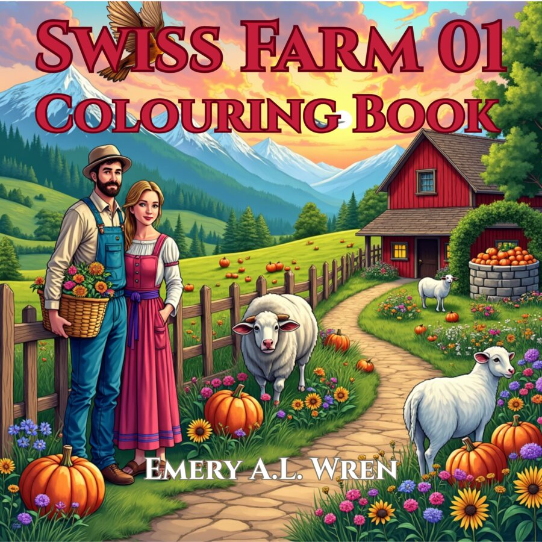
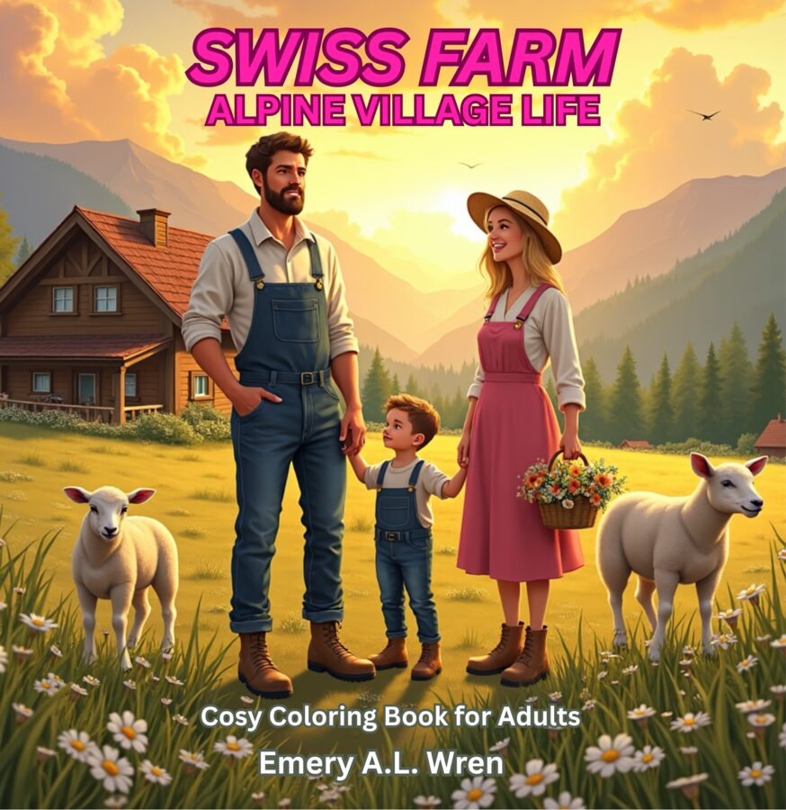
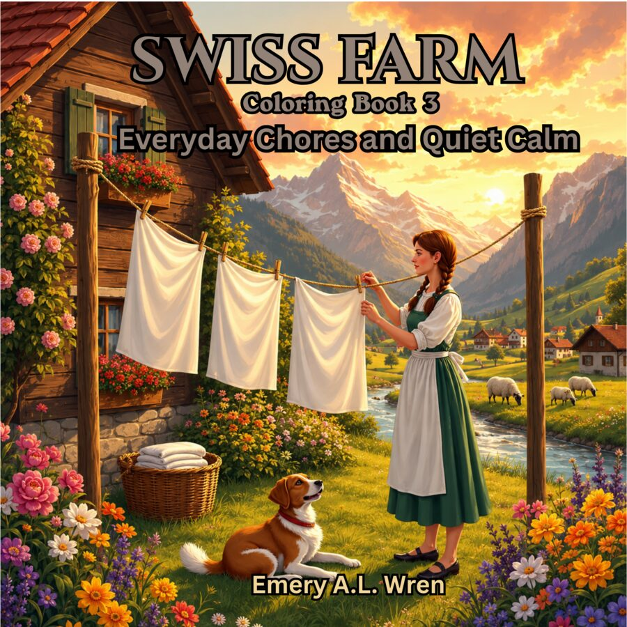
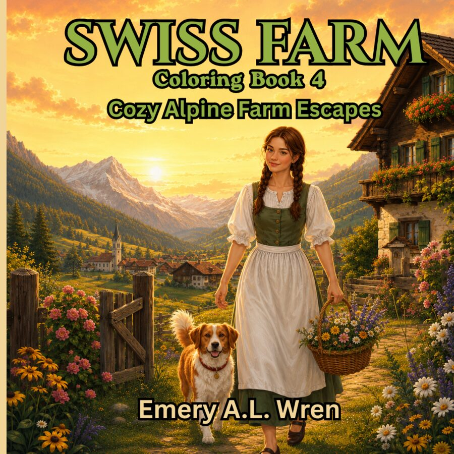

Book 1
Swiss Farm 01
The beginning of the journey—bright countryside scenes, farm animals and Alpine charm.
View on AmazonA gentle Alpine coloring collection
Quiet farm paths, flower-filled villages and comforting everyday moments—created for peaceful coloring, one page at a time.

Book 5 · Fully Living the Rhythm
Welcome to Swiss Farm
Each book opens a small window into warm village life: gardens and animals, daily chores, shared tables and peaceful countryside. Choose the world that calls to you and make it your own with color.
The collection
Available as coloring books on Amazon.

Book 1
The beginning of the journey—bright countryside scenes, farm animals and Alpine charm.
View on Amazon
Book 2
Meet the people and animals who bring the village to life beneath the mountains.
View on Amazon
Book 3
Laundry in the sun, baskets of flowers and the gentle satisfaction of simple work.
View on Amazon
Book 4
Scenic farm views and comforting corners made for an unhurried coloring afternoon.
View on Amazon
Book 5 · Newest
A slower, softer way to live—shared tea, garden mornings and a faithful farm dog nearby.
View on AmazonFor groups and communities
Swiss Farm books can bring a calming, screen-free activity to schools, charities, care homes and community groups.
Email Emery A.L. Wren Studio emeryalwrenstudio@gmail.com